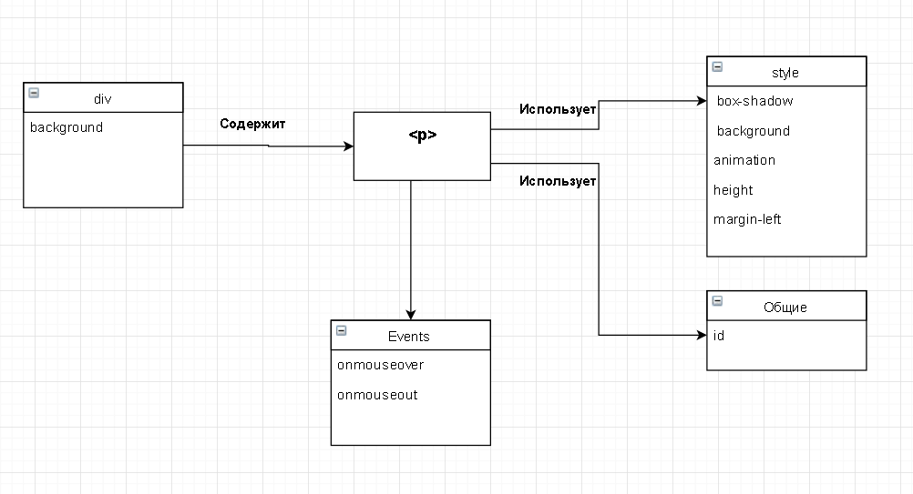

Личная страница студентки группы ИДБ-13-13
Спиридоновой Е.Н.
BORDY LINE
Задание 1:сделать анимированную полоску бордового цвета с текстом в теге p
Для достижения цели был использовано css свойство box-shadow, которое прекрасно анимируется.
box-shadow: Добавляет тень к элементу. Допускается использовать несколько теней, указывая их параметры через запятую, при наложении теней первая тень в списке будет выше, последняя ниже. Если для элемента задается радиус скругления через свойство border-radius, то тень также получится с закругленными уголками.
Задание 2:Описать шаги лабораторной №1.
Лабораторная 1
UML-диаграмма ниже

русский